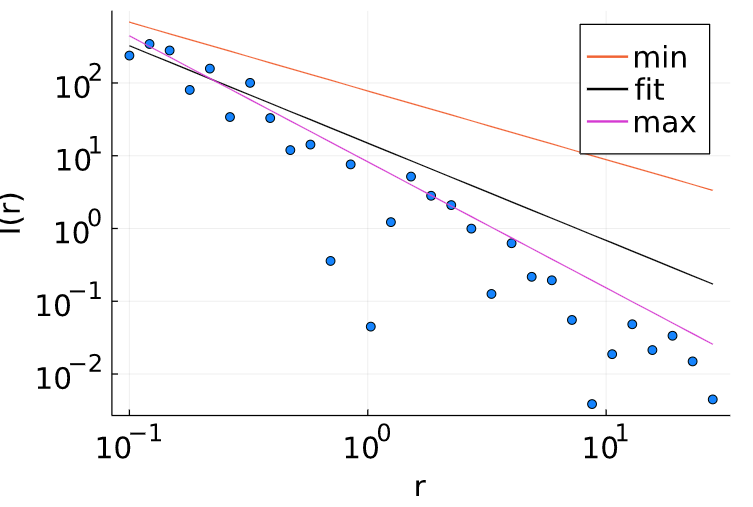

8 Dados com erros
Seus resultados experimentais anteriores foram perfeitos ou ideais, já que criamos eles no computador. No mundo real seus dados irão desviar do modelo matemático por inúmeros motivos, desde o equipamento de medição com problemas, até efeitos não-lineares que foram desconsiderados, começarem a serem relevantes. A solução inevitável é estimar o erro dos seus resultados, e existe todo um arcabouço matemático dedicado a isso. No entanto, é um processo chato e trabalhoso. Felizmente, computadores são ótimos para automatizar processos trabalhosos.
Vamos recriar o fit do problema anterior, porém adicionaremos erros aleatórios para emular dados reais.
Quando trabalhamos com simulações envolvendo números aleatórios, é uma boa prática cientifica controlar o gerador de números aleatórios, assim, os seus dados podem ser reproduzidos por outras pessoas. Com o pacote
Random.jlfixe aseedde números aleatórios com o número 18 - não tem nada de especial com esse número. Ele só foi fixado para você não ficar escolhendo números.Para cada valor de \(I(r)\), multiplique por um número aleatório com a função
rand, e exiba seus novos resultados comscatterplot. Multiplicar por números aleatórios vai garantir que a ordem de grandeza do erro é proporcional ao valor da medição.Com o pacote
LsqFit.jlcalcule novamente os valores dos parâmetros \(a\) e \(b\). O pacote permite estimar o erro de cada parâmetro com a funçãostderror(fit)ou o intervalo de confiança comconfidence_interval(fit). Exiba curvas de intervalo de confiança, junto da curvay_fit.
Até o momento, seus resultados devem estar parecido com a Figura 8.1. Tecnicamente, nós não fizemos errado, usamos equações certas e podemos ainda ajustar a função curve_fit para fixar os limites inferiores/superiores de cada parâmetro, e mesmo assim, eu já lhe garanto que isso não é a solução.

LsqFit.jl.Nosso erro foi esquecer que trabalhamos com valores em escala logarítmica. O nome do pacote utilizado, LsqFit.jl, significa Least-Squares Fitting, que em essência, calcula o erro quadrático entre sua função modelo com os dados experimentais. Os nossos dados possuem valores que decrescem ordens de magnitude, logo, pontos próximos da origem, possuem erros maiores, e serão as regiões dominantes do ponto de vista do algoritmo.
A primeira solução é fazer um fit ponderado, no qual você informa ao algoritmo qual a “importância”, o “peso”, a “contribuição” que cada valor \(I(r)\) possui, com um vetor w_t. Normalmente você faz esse procedimento quando já conhece alguma informação extra do sistema. No nosso exemplo, isso não é verdade, e o melhor que poderiamos fazer é supor alguns pesos ad hoc, e usar o comando
curve_fit(modelo, x_data, y_data, wt, condição_inicial)A segunda solução é a correta, vamos linearizar os dados, isto é, nós aplicamos mudanças de variáveis no sistema, de tal forma que ele se comporte como uma equação de primeiro grau. Em problemas com fatores exponenciais, nossa transformação acontece aplicando a função logarítmica:
\[ \begin{alignat*}{4} I(r) &= \frac{P}{4\pi r^2}\\ I(r) &= \frac{1}{r^2}\cdot\frac{P}{4\pi}\\ log_{10}(I(r)) &= log_{10}\left (\frac{1}{r^2} \right ) + log_{10}\left (\frac{P}{4\pi} \right )\\ log_{10}(I(r)) &= log_{10}\left (r^{-2} \right ) + log_{10}\left (\frac{P}{4\pi}\right )\\ log_{10}(I(r)) &= -2log_{10}(r) + log_{10}\left (\frac{P}{4\pi}\right )\\ Y &= -2X + C \end{alignat*} \tag{8.1}\]
- Linearize seus dados
Calcule o logaritmo de \(r\) e \(I(r)\)
Refaça o seu fit com um modelo do tipo \(y(x,p) = p_1x + p_2\).
Exiba seus resultados e veja que agora estarão muito melhores.